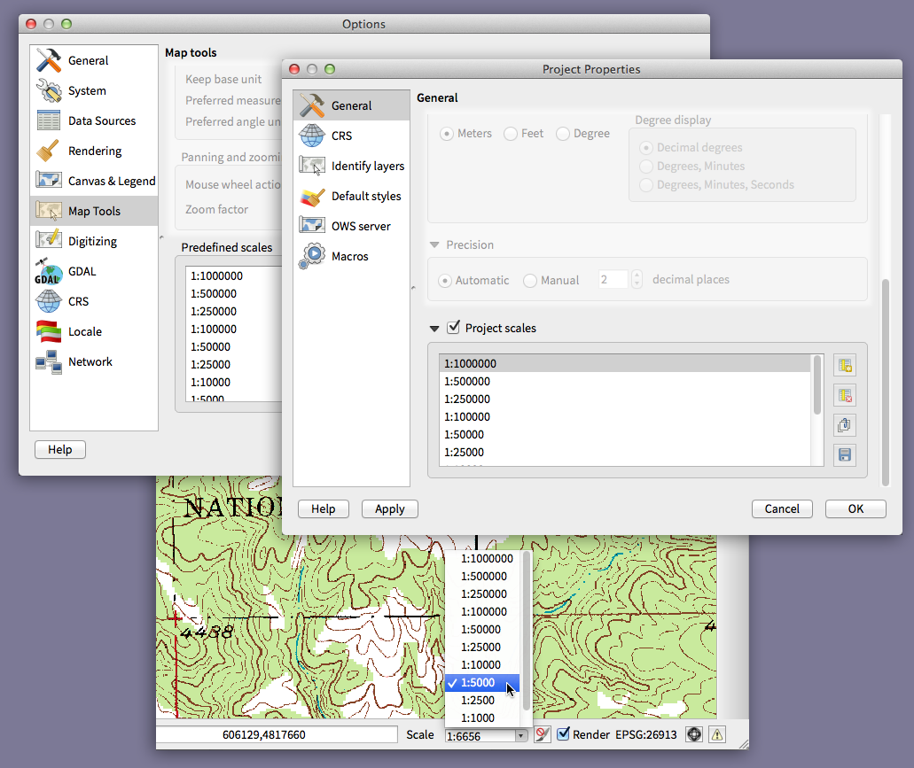
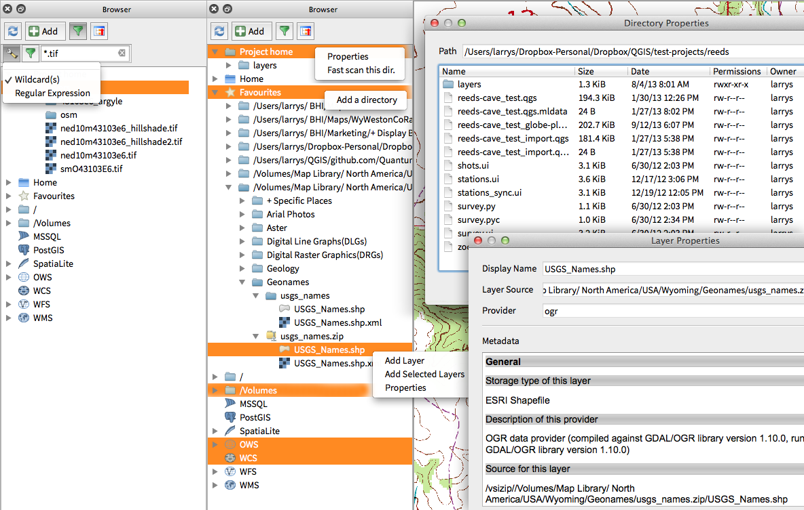
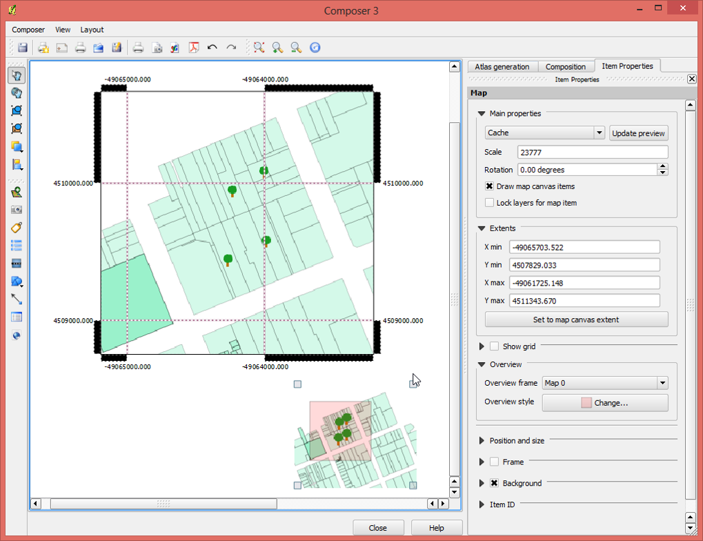
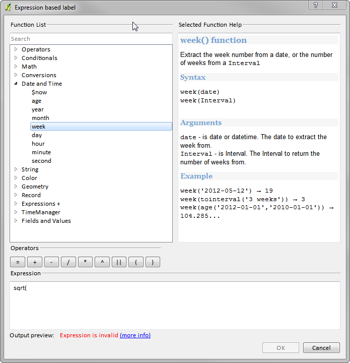

Alterações no QGIS 2.0¶
- Ferramentas de análises
- Aplicação e opções de projeto
- Navegador
- Provedores de dados
- Novidade: Fornecedor de dados raster revisado
- Uma das grandes novidades do novo Processing é a capacidade de combinar as ferramentas graficamente. Usando o gráfico ** ** modelador, é possível construir uma análise complexa de uma série de pequenos módulos. Você pode salvar esses modelos e, em seguida, usá-los como tijolos para construir modelos mais complexos. Tudo isso é integrado diretamente no QGIS e muito fácil de usar!
- Novidade: Provedor Web Coverage Service adicionado
- Novidade: Raster corte de 2% acumulada por padrão
- Novidade: Identificador para o formato WMS
- Novidade: Suporte WMTS
- Geral
- Rotular
- Legenda da camada
- Compositor de impressão
- Novidade: Itens HTML nos Mapas
- Novidade: Suporte multi página
- Novidade: Expressões no compositor de rótulos
- Novidade: Linhas de auto-ajuste
- Novidade: Linhas de ajuste manual
- Novidade: Geração de séries de mapas
- Novidade: Suporte automático de visão geral no mapa
- Novidade: camada de mistura
- Novidade: Suporte para rótulo HTML
- Novidade: Criação de legendas em multicolunas
- Novidade: Atualizações para a gerenciamento do compositor de mapas
- Complementos
- Programação
- Simbologia
- Novidade: Propriedades definidas para dados
- Novidade: Aperfeiçoamento da gestão da simbologia
- Novidade: O suporte para a transparência na definição de cores
- Novidade: Controle de cores para camadas raster
- Novidade: Cópia de simbologia entre camadas
- Novidade: Salvar estilos no seu banco de dados
- Novidade: Suporte a Rampa de cores
- Novidade: Definir estilos padrão personalizados para todos os tipos de camada
- Interface de usuário
- Novidade: Novo tema de ícones
- Novidade: Abas laterais, grupos retraíveis
- Novidade: ligeiras modificações
- Novidade: fonte padrão para o aplicativo e QT estilo
- Novidade: diálogos do seletor de cores
- Novidade: Anotações SVG
- Novidade: Arraste e forma de gota construtor
- Novidade: Ferramenta de ação padrão
Ferramentas de análises¶
Novidade: Comando de processamento¶
Para um rápido acesso às funcionalidades de geoprocessamento, apenas pressione o atalho de processamento (Ctrl + Alt + M) e inicie digitando o nome da ferramenta que você está procurando. O comando mostrará as opções disponíveis e as iniciará para vocês. Sem mais pesquisas para achar as ferramentas. Elas estão agora na ponta dos seus dedos!

Novidade: Aprimoramentos para o Complemento do Mapa de Calor¶
O complemento de Mapa de calor teve inúmeros aprimoramentos e optimizações, resultando em criações mais rápidas destes tipos de mapas. Adicionalmente, você agora tem a escolha de qual função kernel é utilizada para criar os mapas de calor.

Novidade: Suporte de processamento¶
O projeto SEXTANTE foi portado e incorporadas como funcionalidade básica do QGIS. O SEXTANTE foi renomeado para ‘Processamento’ e introduzido ao novo menu no QGIS por onde qualquer um pode ter acesso a uma rica caixa de ferramenta para analise espacial. A caixa de ferramentas de processamento tem funcionalidade incrivelmente ricas - com uma API de programação em Python que permite que você possa facilmente adicionar novas ferramentas e ganchos para fornecer acesso a recursos de análise de muitas ferramentas de código aberto populares, tais como a GRASS, OTB, SAGA etc

Novidade: Modelador do Processamento¶
Uma das grandes novidades do novo Processing é a capacidade de combinar as ferramentas graficamente. Usando o modelador gráfico, é possível construir uma análise complexa de uma série de pequenos módulos. Você pode salvar esses modelos e, em seguida, usá-los como tijolos para construir modelos mais complexos. Tudo isso é integrado diretamente no QGIS e muito fácil de usar!

Aplicação e opções de projeto¶
Novidade: Definir projeto de inicialização padrão e modelos de projeto¶
Com QGIS 2.0, você pode especificar o QGIS deve fazer quando se inicia: Novo Projeto (comportamento legado, começa com um projeto em branco), Mais recente (quando você começa QGIS ele vai carregar o último projeto em que trabalhou),`` especifico`` (sempre carregar um projeto específico quando começa QGIS). Você pode usar o diretório modelo de projeto para especificar onde os seus projetos de modelo deve ser armazenado. Qualquer projeto que você armazena no diretório estarão disponíveis para uso como um modelo ao acessar o menu Projeto --> Novo a partir de Modelo.

Novidade: Variáveis de ambiente do sistema¶
As variáveis de ambiente do sistema podem ser visualizados e configurados na janela de Opções. Útil para diversas plataformas, como Mac, uma aplicação gráfica onde você não necessariamente herdar o ambiente shell do usuário. Também é útil para criar / visualizar as variáveis de ambiente ferramentas externas, como SAGA, GRASS, e para ativar o debug para seções específicas do código-fonte.

Novo: escalas de zoom definido¶
A lista de escalas de zoom pode ser configurado para o aplicativo e, possivelmente, substituído no arquivo do projeto. A lista aparecerá na caixa suspensa ao lado da escadaria na barra de status, permitindo que você acesse rapidamente as escalas de exibição. Definir as escadas, podem ser exportados para um arquivo XML que pode ser importado para outros projetos ou outro QGIS aplicação.

Navegador¶
Característica: Melhorias no painel do browser in-app¶
- Os diretórios podem ser filtrados por expressões curinga ou regex
- Novo
Projeto home(diretório pai do atual projeto) - Ver `` Propriedades`` do diretório selecionado em uma caixa de diálogo
- Escolha os diretórios para
scaneamento rápido - Escolha um
diretório para adicionardiretamente para osFavoritosatravés do diálogo de busca do sistema de arquivos - Novo / Volumes` no Mac (pasta oculta para acessar discos externos)
- Novo grupo “OWS” (agrupamento de conexões do servidor mapa disponível)
- Abra um segundo Buscador (
Exibir -> Paineis -> Buscador (2)) para interações drag-an-drop entre painéis navegador - Agora os ícones estão classificados por tipo de grupos de cada item (sistema de arquivos, banco de dados, serviços de mapas)
Propriedadesda camada agora têm uma melhor apresentação visual

Provedores de dados¶
Novidade: Fornecedor de dados raster revisado¶
O sistema de provedor de dados raster foi completamente reformulado. Uma das melhores características novas que decorrem deste trabalho é a capacidade de “camada -> Salvar como …” para salvar qualquer camada raster como uma nova camada. No processo, você pode cortar, reamostrar, e reprojetar a camada para um novo sistema de coordenadas de referência. Você também pode salvar uma camada raster como uma imagem renderizada por isso, se você, por exemplo, tem raster única banda que você aplicou uma paleta de cores, você pode salvar a camada prestado fora de uma camada RGB georreferenciada.

Uma das grandes novidades do novo Processing é a capacidade de combinar as ferramentas graficamente. Usando o gráfico ** ** modelador, é possível construir uma análise complexa de uma série de pequenos módulos. Você pode salvar esses modelos e, em seguida, usá-los como tijolos para construir modelos mais complexos. Tudo isso é integrado diretamente no QGIS e muito fácil de usar!¶
QGIS 2.0 agora inclui suporte Oracle Spatial.

Novidade: Provedor Web Coverage Service adicionado¶
QGIS agora oferece suporte nativo para as camadas de cobertura do serviço da Web - o processo de adição de WCS é semelhante a adicionar uma camada WMS ou camada WFS.
Novidade: Raster corte de 2% acumulada por padrão¶
Muitos produtos de imagens de varredura têm um grande número de valores extremos, que resultam em imagens que têm uma aparência desbotada. QGIS 2.0 apresenta controle de grão muito mais detalhado sobre o comportamento de processamento de rasters, incluindo o uso de 2% - 98% por cento corte cumulativo, por padrão, ao determinar o espaço de cor para a imagem. A imagem aqui mostra QGIS 1.8 (esquerda) versus QGIS 2.0 (à direita) ao renderizar a mesma imagem com as configurações padrão.

Novidade: Identificador para o formato WMS¶
Agora é possível utilizar a ferramenta identificar para camadas WMS se vários formatos conhecidos são suportados pelo servidor. Os formatos suportados são HTML, feição (GML) e textos simples. Se o formato de feição (GML) estiver selecionado, o resultado estará da mesma forma das camadas vetoriais, a geometria poderá ser destacada e a feição, incluindo atributos e geometria podem ser copiados para a área de transferência e colado e alguma outra camada.

Novidade: Suporte WMTS¶
O cliente WMS no QGIS suporta agora WMTS (Web Mapping Serviço Tile), incluindo a seleção de sub-conjuntos de dados, tais como fatias de tempo. Ao adicionar uma camada WMS de um servidor compatível, você será solicitado a selecionar o intervalo de tempo para exibir.

Geral¶
Novidade: Quantum GIS agora é chamado apenas de ‘QGIS’¶
O ‘Quantum’ em ‘Quantum GIS “nunca teve um significado especial e a dualidade de referência para o nosso projeto como ” Quantum GIS “e ” QGIS “causou alguma confusão. Estamos agilizando nosso projeto e, como parte desse processo, nós estamos retirando oficialmente o uso da palavra “Quantum ” - a partir de agora não só será conhecido como “QGIS ” (todas as letras maiúsculas). Atualizaremos todos os códigos e os nossos materiais de publicidade para refletir isso.

Rotular¶
Novidade: Novo sistema de rotulagem¶
O sistema de rotulagem foi totalmente reformulado - que agora inclui muitas características novas, tais como sombras, “escudos estrada ‘, muitas opções mais dados vinculados, e várias melhorias de desempenho. Aos poucos, estamos acabando com o sistema dos antigos rótulos “, embora você ainda vai achar que a funcionalidade está disponível para este lançamento, você deve esperar que ele vai desaparecer em um seguimento de lançamento.

Novidade: Expressão baseada propriedades de rótulo¶
Todo o potencial do rótulo comum e das expressões baseadas em regra podem agora ser utilizadas nas propriedades dos rótulos. Quase todas as propriedades podem ser definidas com uma expressão ou um valor de atributo dando, assim, maior controle sobre o resultado do rótulo. Expressões podem se referir a um campo (ex. ajuste de tamanho de fonte baseado no campo “fonte”) or se incluir em lógicas mais complexas.
Exemplo:
- Fonte
- Tamanho
- Estilo
- Tamanho do buffer

Novidade: Antigo motor de rotulagem obseleto.¶
Utilização do motor velho rotulagem disponível em QGIS <= 1.8 não é desencorajado (ou seja preterido), mas não foi removido. Isto para permitir que os usuários migrem projetos existentes do antigo para o novo motor de rotulagem.
As diretrizes a seguir para trabalhar com o motor mais velho em QGIS 2.0 se por:
- Guia de rotulagem deprecado é removida propriedades da camada vector de diálogo para novos projetos ou projetos antigos abertos que não usam esse motor rotulagem.
- As guias depreciadas permanecem ativas para projetos antigos abertos, se houver camada usa-los, e não vai embora, mesmo que salvar o projeto sem camadas com o motor de rotulagem mais velhos habilitado.
Guia de rotulagem depreciadas pode ser ativado / desativado para o projeto atual, através de comandos de console Python, por exemplo:
>>> QgsProject.instance().writeEntry('DeprecatedLabels', '/Enabled', True | False)
# or
>>> QgsProject.instance().removeEntry('DeprecatedLabels', '/')
NOTE: Há uma probabilidade muito elevada o motor rotulagem depreciado será completamente removido antes da próxima versão estável do QGIS. Por favor migrar projetos mais antigos.

Legenda da camada¶
Novidade: Legenda e opções visuais¶
- Contagem total por feições de camadas, bem como por símbolo
- Camadas vetoriais em modo de edição agora têm um lápis vermelho para indicar edições inconclusas (não salvas)
- Camadas ativas são agora sublinhadas para indicar se estão em uma seleção multi-camadas ou quando não há seleção
- Clicando em um espaço vazio limpa a seleção
- Os
cliques direitosão tratados comocliques de esquerda, antes de ver o menu de contexto, permitindo que um único clique em vez de dois - Grupos e camadas podem, opcionalmente, estar com estilo de fonte em negrito
- Ícones de visualização para camadas matriciais agora podem ser desabilitados para projetos nos quais a renderização pode ser lenta

Novidade: Duplicar camada de mapa existente¶
Duplicar camadas selecionadas vetoriais e raster na legenda camada do mapa. Semelhante ao importar a mesma fonte de dados novamente, como uma camada separada, em seguida, copiar os atributos / estilo colar e simbologia.

Novidade: Multi-camada de comandos de edição de alternância¶
O usuário agora pode selecionar várias camadas e, se qualquer uma dessas operadoras estão em modo de edição, escolher salvar ou cancelar as alterações não salvas. O usuário também pode optar por aplicar essas medidas a partir de todos os níveis, independentemente da seleção.

Compositor de impressão¶


Novidade: Expressões no compositor de rótulos¶
O item do compositor de rótulos na versão 1.8 era bastante limitado e apenas permitia um entrada $CURRENT_DATE para ser utilizada. Na versão 2.0 o suporte para expressões completas tem sido implementado apra incrementar e dar um maior controle na exibição dos rótulos
Uma etiqueta com uma expressão como:
This was printed on: [% format_date( $now, 'dd.MM.yyyy')%]
será avaliada no momento da impressão (e tempo de exibição) para gerar:
This was printed on: 06.09.2013
Quando a geração de atlas está habilitado a atualmente ativa valores de atributos ‘apresenta também estarão acessíveis nas expressões que permitem coisas como:
Asset ID [% "ID" %] and the Tree Type is [% "TreeType" %]

Novidade: Linhas de auto-ajuste¶
Ter um bom alinhamento dos itens do mapa é fundamental para obter bons mapas. As linhas de auto-ajuste têm sido adicionadas para permitir mais facilidade ao alinhamento de objetos apenas arrastando-os para próximos de outros.

Novidade: Linhas de ajuste manual¶
Em determinados momentos é necessário alinhar objetos que estão a curta distância um do outro no compositor. Com a nova linha de ajuste manual, você é capaz de adicionar linhas que permitirão um melhor alinhamento entre os objetos. Apenas arraste na régua, na porção superior ou lateral, para criar uma nova linha guia.

Novidade: Geração de séries de mapas¶
Nunca precisou gerar uma série de mapas? Claro que sim. O compositor agora inclui a geração de séries de mapas usando a ferramenta Atlas. As camadas cobertas podem ser de pontos, linhas, polígonos e o atual atributo da feição está disponível nos rótulos para substituição do valor real.

Novidade: Suporte automático de visão geral no mapa¶
Agora você pode mostrar a área atual do mapa principal numa pequena janela de visão geral. O quadro do mapa agora contém a funcionalidade para visualizar as extensões de outro e ele será atualizado quando movido. Utilizando isto com a ferramenta de geração de atlas nativo no compositor permite mais agilidade na criação de mapas. O estilo da visão geral é a mesma utilizada nos objetos do tipo polígono, por isso sua criatividade nunca será restringida.

Novidade: camada de mistura¶
A camada de fusão permite combinar várias camadas de diferentes maneiras com diferentes opções “multiplicar “, “escurecer ” e outros.
Mistura pode ser utilizado no modo normal de mapa, bem como na impressão compositor. Por um breve tutorial sobre como usar a mistura na impressão compositor para tirar o máximo proveito de imagens de fundo, consulte ” design vintage mapa usando QGIS “.

Novidade: Suporte para rótulo HTML¶
Suporte para HTLM tem sido acrescentado como item de rótulo do compositor de mapa para dar-lhes ainda mais controle sobre os mapas finais. Rótulos em HTML suportam planilhas completas em estilo css, html, e até mesmo javascript, se assim for o caso.

Novidade: Criação de legendas em multicolunas¶
A criação de legendas agora suportam colunas múltiplas. Dividindo um única camada com muitas classes em múltiplas colunas é opcional. Camadas com símbolos únicos são adicionadas por padrão item de linha simples. Três diferentes estilos podem ser atribuídos ao título da camada/grupo: Grupo, Subgrupo ou Oculto. Os estilos dos títulos permitem um agrupamento visual dos itens. Por exemplo, um camada de símbolo único pode ser exibida como um item de linha simples ou com o título da camada (como no 1.8), símbolos de múltipilas camadas em sequência podem ser agrupadas em um único grupo (ocultando os títulos), etc. A contagem de feições pode ser adicionadas aos rótulos.

Novidade: Atualizações para a gerenciamento do compositor de mapas¶
Os seguintes aperfeiçoamentos foram introduzidos para o gerenciamento do compositor:
- O nome do compositor pode agora ser definido após a criação, opcionalmente escolhendo iniciar um a partir de outros já criados
- Compositores podem agora ser duplicados
- “Novo de Modelo” e “específico” (em Composer Manager) cria um compositor a partir de um modelo localizado em qualquer ponto do disco
- Projetos podem agora ser salvos diretamente do espaço de trabalho do compositor
- Todas as ações do Gerenciador do compositor agora estão acessíveis diretamente do espaço de trabalho do compositor

Complementos¶
Novidade: Gerenciador de plugins renovado¶
No QGIS gestão plugins 1.x foi um pouco “confuso com duas interfaces - uma para lidar com o plugin instalado e um plugin python para a recuperação de um único repositório. No QGIS 2.0 introduzimos um novo unificado, gerente, plugin que fornece um local para o download, ativação / desativação e, geralmente, para a gestão de plugins.

Programação¶
Novidade: Novo console Python¶
O novo console da Python lhe dá ainda mais poder. Agora apoiar autocompletar, destaque de sintaxe, configurações de fonte ajustável. O código do lado do editor permite a escrita de grandes blocos de código mais fácil com a capacidade de abrir e executar qualquer arquivo Python em sessão QGIS.

Novidade: novas funções para expressões¶
Com o motor de expressão cada vez mais utilizado, para permitir operações como etiquetas com base na expressão e símbolo, muitas outras funcionalidades foram adicionadas à expressão construtor e são acessíveis com o Expression Builder. Todas as funções são acompanhadas de suporte e manuais de usuário.

Novidade: Funções de expressão personalizada¶
Se a engine da expressão não tem a função que você precise, não se preocupe. Novas funções podem ser adicionadas através de uma simples API em Python.

Novidade: Nova API Pyton¶
A API do Python foi renovado para permitir uma programação mais organizada e limpa. A API QGIS 2.0 utiliza SIP V2 que elimina a toString confuso (), Toint () que eram necessários quando se trabalha com valores. Os tipos agora são convertidos para tipos Python nativas. Os atributos podem agora ser acessados usando uma chave de busca simples, não mais do que o índice de pesquisa e mapas de atributos.
>>> feature['mycolumn'] = 10
>>> feature['mycolumn']
10
Melhoria da leitura da geometria de uma camada, a fim de permitir multithreading no futuro.
for feature in layer.getFeatures():
print feature['mycolumn']

Novidade: Código de compatibilidade com os lançamentos de versões 1.x¶
Como este é um grande lançamento, ela não é totalmente compatível com os API, os lançamentos das versões anteriores 1.x. Na maior parte dos casos, a adaptação do código deve ser bastante simples - você pode usar o guia <http://hub.qgis.org/wiki/quantum-gis/Python_plugin_API_changes_from_18_to_20>` para iniciar. Por favor, utilize a lista de desenvolvedores se precisar de maiores informações.

Novidade: macros Python neste projeto¶
Um módulo Python, salvo em um arquivo project.qgs, podem ser carregados e têm funções específicas executadas nos seguintes eventos do projeto:
openProject()saveProject()closeProject()
Se as macros são executadas pode ser configurado nas opções de aplicação.

Simbologia¶
Novidade: Propriedades definidas para dados¶
Com as novas propriedades de dados definidos, é possível controlar o tipo, tamanho, cor, rotação e muitas outras propriedades dos símbolos através dos atributos das feições.

Novidade: Aperfeiçoamento da gestão da simbologia¶
A nova visão geral da simbologia das camadas utiliza um modelo limpo e estruturado em árvoce que permite acesso rápido e fácil a todos as opções de simbologia.

Novidade: O suporte para a transparência na definição de cores¶
Na seleção de cores, QGIS agora permite que você especifique o canal alfa (que determina o grau de transparência da cor).Isto permite-lhe criar grandes mapas que procuram e para ocultar dados facilmente que você não quer que os usuários vejam.

Novidade: Controle de cores para camadas raster¶
QGIS 2.0 permite-lhe controlar com precisão exatamente como você gostaria camadas raster para aparecer. Agora você tem controle total sobre o brilho, o contraste e saturação das camadas raster. Há ainda opções para permitir a exibição de varreduras em tons de cinza ou por colorir com uma cor especificada.

Novidade: Cópia de simbologia entre camadas¶
Agora é super fácil copiar a simbologia de uma camada para outra. Se você está trabalhando com muitas camadas similares, você pode apenas clicar com o botão direito em uma camada e escolher a opção Copiar Estilo do menu de contexto e depois em outra camada também clicar com o botão direito e escolher a opção Colar Estilo.

Novidade: Salvar estilos no seu banco de dados¶
Se você está armazenando os dados em um banco de dados vetoriais, você pode fornecer as definições de estilo diretamente no banco de dados. Isto facilita o compartilhamento dos estilos das camadas numa organização ou num ambiente multi-usuário.

Novidade: Suporte a Rampa de cores¶
Agora disponível são as escadas para o simbolismo das cores. Você pode definir o seu próprio ou de outro veja aqui <http://soliton.vm.bytemark.co.uk/pub/cpt-city/> __ Temas são incluídos no qgis agora ‘fora da caixa’. Rampas de cores ainda tem suporte completo para transparência!

Novidade: Definir estilos padrão personalizados para todos os tipos de camada¶
Agora QGIS permite controlar como novas camadas serão atraídos quando eles não têm um .qml estilo existente definido. Você também pode definir o nível de transparência padrão para novas camadas e se os símbolos devem ter cores aleatórias que lhes forem atribuídas.

Interface de usuário¶
Novidade: Novo tema de ícones¶
Nós atualizamos o tema de ícones para usar o tema “SIG”, que apresenta um maior nível de consistência e profissionalismo para a interface do usuário QGIS.

Novidade: Abas laterais, grupos retraíveis¶
Nós padronizamos o layout das abas e introduzimos caixas de grupos retraíveis em vários de nossos diálogos para facilitar a navegação e aprimorar o uso.

Novidade: ligeiras modificações¶
Em muitos casos, queremos dizer-lhe alguma coisa, mas não quero interromper o seu trabalho ou entrar em seu caminho. Com o novo sistema de notificação QGIS pode introduzir-lhe informações importantes através de uma barra de mensagens amarela que aparece na parte superior da tela do mapa, mas não forçá-lo a interromper o seu trabalho. Os programadores podem criar essas notificações (por exemplo, a partir de um plugin), também utilizando a nossa API Python.

Novidade: fonte padrão para o aplicativo e QT estilo¶
A fonte do sistema utilizado para a interface de usuário do aplicativo pode agora ser definido. Qualquer plugin ++ C ou Python são executados dentro de QGIS pode herdar seu estilo, o que é útil em diferentes plataformas e quando usando widgets QGIS QT, tais como QgsCollapsibleGroupBox`.
O QGIS folha de estilo personalizado está disponível após a conclusão (dentro PyQGIS)
qgis.utils.iface.mainWindow().styleSheet()

Novidade: diálogos do seletor de cores¶
Cada botão seletor de cores para toda a interface foi atualizada para dar feedback visual se a cor atual tem uma transparência ‘alpha’. O seletor de cores abertas pelos novos botões coloridos agora sempre o padrão para o sistema operacional. Se o usuário tiver `` Use live-atualização de seleção de cores dialogo`` verificada em `` Opções -> Geral -> Aplicações``, qualquer mudança no seletor de cores será imediatamente mostrado no botão de cor e de qualquer item sendo editado , quando aplicável.

Novidade: Anotações SVG¶
Com QGIS 2.0 agora é possível adicionar anotações ao SVG mapa - está preso a um lugar específico ou em uma posição relativa no mapa.

Novidade: Arraste e forma de gota construtor¶
QGIS 2.0 suporta um novo sistema para a criação de formas de entrada de dados. Com o designer do formulário para arrastar e soltar você pode criar formulários inteligentes com guias para agrupar campos comuns juntos. Agora é muito mais fácil de controlar a experiência de entrada de dados para os usuários.

Novidade: Ferramenta de ação padrão¶
Se você é um usuário de ações camada vetorial (pequenas tarefas que podem ser executados quando você clica em um recurso), você vai adorar a nova ferramenta de ação na barra de ferramentas. Com ele você pode selecionar uma ação ativa e, em seguida, clique em seus recursos para chamar essa ação.